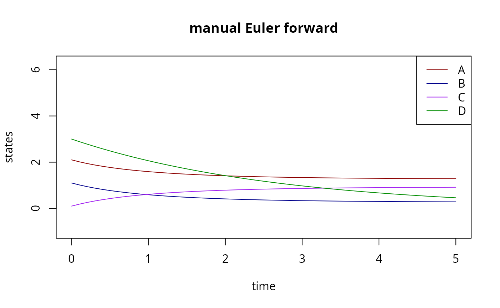
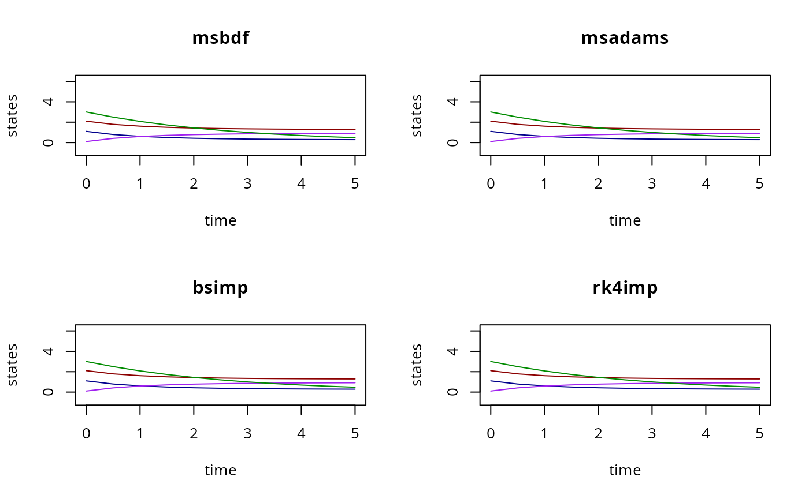
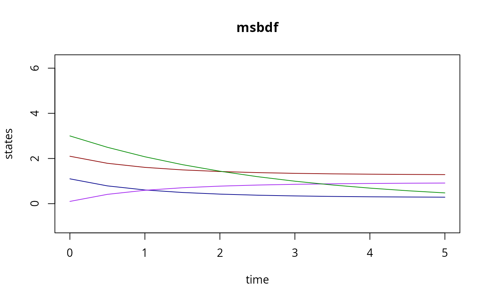
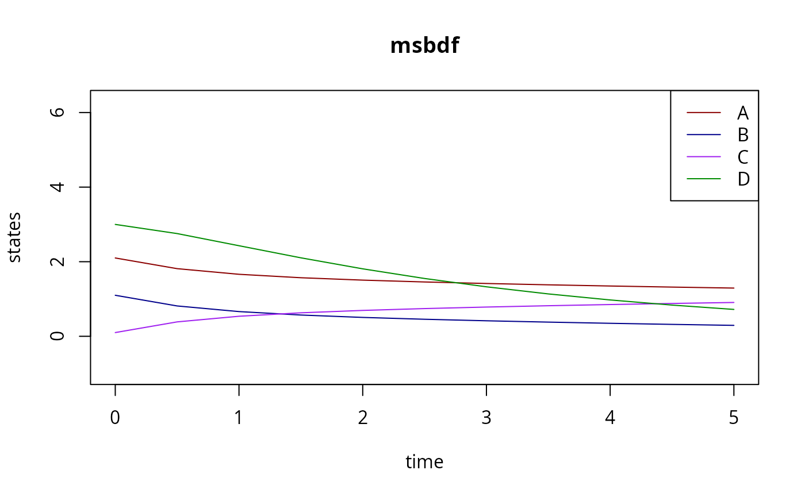

Chemical Reaction Neural Network (CRNN)
crnn.RmdModel Type
CRNNs, are a specific category of ordinary differential equations (ODEs). The ODE is constrained in such a way that the right hand side (vector field) function must map to a Neural Network (NN), but the network structure remains general enough to encode many systems by changing the parameters, without re-building the model.
The output of the CRNN is the right hand side function:
\[ \dot x(t) = CRNN(t,x,p)\,, \]
where \(p\) includes the kinetic rate coefficients, the stoichiometry and information about catalytic modifiers (reactants that are not consumed by the reaction).
Example
We want to simulate these two reactions:
A + B <=> C
D <=> ØConventional Approach (simplified)
The simple way to simulate exactly this model is to create a flux \(v\) from the law of MASS action:
\[ v(x,k) = \begin{pmatrix} k_{1,\text{f}} A B - k_{1,\text{r}} C\\ k_{2,\text{f}} D - k_{2,\text{r}} \end{pmatrix} \]
Where the \(k\) are kinetic rate coefficients.
The stoichiometry of this system is:
\[ \nu = \begin{pmatrix} -1 & 0\\ -1 & 0\\ 1 & 0\\ 0 & -1 \end{pmatrix} \]
Finally, the system is:
\[ \dot x = \nu \cdot v(t,x,k) \]
In R, this becomes:
nu <- matrix(
c(
-1,-1,1,0,# reaction 1
0,0,0,-1 # reaction 2
),
4,2,
dimnames=list(c("A","B","C","D"),c("A+B<=>C","D->0"))
)
print(nu)
#> A+B<=>C D->0
#> A -1 0
#> B -1 0
#> C 1 0
#> D 0 -1Next we set the kinetic rate coefficients, but in logarithmic space
l = log(k), we set them as a matrix, with the first column
containing all forward coefficients \(k_{\text{f}}\), and the second column all
reverse rates \(k_{\text{r}}\)
m <- matrix(0,4,2) # we have no modifiers
l <- matrix( # log(k)
c(
-1,-1, # forward
-2,-30 # backward
),
2,2, # two reactions, fwd+bwd
dimnames=list(c("A+B<=>C","D<=>0"),c("fwd","bwd"))
)
print(l)
#> fwd bwd
#> A+B<=>C -1 -2
#> D<=>0 -1 -30
## initial values:
iv <- c(A=2.1,B=1.1,C=0.1,D=3.0)
## we collect all parameters into a list:
par <- list(l=l,nu=nu,m=m)Here, we made the second reaction almost irreversible:
k[2,'bwd'] = exp(-30) # ~1e-13Next, we define the vector field and Jacobin (the ODE):
manual_jac <- function(t,y,par){
k <- exp(par$l)
dflux_dy <- matrix(
c(
k[1,1]*y['B'],k[1,1]*y['A'],-k[1,2],0,
0,0,0,k[2,1]
)
,2,4,
byrow=TRUE
)
J <- par$nu %*% dflux_dy
return(J)
}
## kinetic laws hard-coded into vf, changing nu will make this wrong:
manual_vf <- function(t,y,par){
k <- exp(par$l)
flux <- c(k[1,'fwd']*y['A']*y['B'] - k[1,'bwd']*y['C'],k[2,'fwd']*y['D']-k[2,'bwd'])
return(as.vector(par$nu %*% flux))
}These two functions are not very general, any changes to \(\nu\) must be considered in the flux expressions. These functions hard-code the model’s structure at least partially.
We could use vf and jac with deSolve (with
some modification), but since it is a very small system we can obtain a
fairly good solution with Euler forward steps (ignoring the Jacobin
entirely):
y <- iv # initialize
dt <- 0.1 # time step
tm <- seq(0,5,by=dt)
Y <- matrix(NA,length(y),length(tm))
for (j in seq_along(tm)){
Y[,j] <- y
f <- manual_vf(tm[j],y,par)
y <- y+f*dt
}
matplot(
tm,
t(Y),
type="l",
xlab="time",
ylab="states",
lty=1,
col=c("red4","blue4","purple","green4"),
ylim=c(-1,sum(iv)),
main="manual Euler forward"
)
legend(
"topright",
legend=LETTERS[seq(4)],
lty=1,
col=c("red4","blue4","purple","green4")
)
CRNN Variant
The same system can be written as a CRNN, more generally:
numReactions <- 2 # this has to be manually set
f <- c(LogSum="log(A+B+C+D)") # an arbitrary output function
C <- CRNN(numReactions,iv,f) # C code
cat(C,sep="\n",file="CRNN.c") # write code to file
modelName <- uqsa::checkModel("CRNN","CRNN.c") # compile
#> building a shared library from c source, and using GSL odeiv2 as backend (pkg-config is used here).
#> cc -shared -fPIC `pkg-config --cflags gsl` -o './CRNN.so' 'CRNN.c' `pkg-config --libs gsl`Next we define the simulation experiment:
The uqsa package provides a function that returns a
closure around the model and experiment, similar to conventional ODEs.
But, in this case, we want to be able to switch between different
integration methods, so we use the solver more explicitly:
par(mfrow=c(2,2))
for (M in seq(0,3)){
y <- gsl_odeiv2_CRNN(
modelName,
experiments=ex,
l=l,
nu=nu,
m=m,
method=M
)
matplot(
ex[[1]]$outputTimes,
t(y[[1]]$state[,,1]),
type="l",
xlab="time",
ylab="states",
lty=1,
col=c("red4","blue4","purple","green4"),
ylim=c(-1,sum(iv)),
main=rgsl::nameMethod(M)
)
}
MCMC and repeated Calls to the solver
In an MCMC context, we typically don’t want to switch between methods, so we would create a closure:
s <- scrnn(ex,modelName) # s encloses ex, and model
y <- s(par) # a function of par only
matplot(
ex[[1]]$outputTimes,
t(y[[1]]$state[,,1]),
type="l",
xlab="time",
ylab="states",
lty=1,
col=c("red4","blue4","purple","green4"),
ylim=c(-1,sum(iv)),
main=rgsl::nameMethod(0)
)
Here, s(par) can be called repeatedly, with various
par, without re-stating which experiments to simulate or
which model to use. But, crucially, changing par$nu will be
correctly handled by the CRNN, the flux and Jacobin will change
accordingly.
Changed Reaction System
The code C we generated for two reactions and four state
variables is general enough to depict every system that has two MASS
action reactions and four reacting compounds. We can easily change it
to:
## now, A+B also create D
par$nu <- matrix(
c(
-1,-1,1,1, # A + B <=> D + C
0,0,0,-1 # D <=> Ø
),
4,2,
dimnames=list(c("A","B","C","D"),c("A+B<=>C+D","D->0"))
)Now, this is just a parameter change. We simulate without generating any new code:
y <- s(par)
matplot(
ex[[1]]$outputTimes,
t(y[[1]]$state[,,1]),
type="l",
xlab="time",
ylab="states",
lty=1,
col=c("red4","blue4","purple","green4"),
ylim=c(-1,sum(iv)),
main=rgsl::nameMethod(0)
)
legend(
"topright",
legend=LETTERS[seq(4)],
lty=1,
col=c("red4","blue4","purple","green4")
)
The dynamics changed correctly.